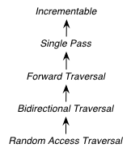
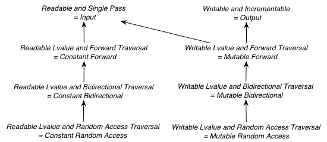

| 作者: | David Abrahams, Jeremy Siek, Thomas Witt |
|---|---|
| 联系方式: | dave@boost-consulting.com, jsiek@osl.iu.edu, witt@styleadvisor.com |
| 机构: | Boost Consulting, 印第安纳大学 开放系统实验室, Zephyr Associates, Inc. |
| 日期: | 2006-09-11 |
| 编号: | 这是 n1550=03-0133 的修订版本, 该文档已被 C++ 标准委员会的库工作组接受用于技术报告 1 (Technical Report 1). 本提案是论文 n1297、n1477 与 n1531 的修订. |
| 版权: | 版权所有 David Abrahams, Jeremy Siek 与 Thomas Witt 2003. |
| 摘要: | 我们提出一个新的迭代器概念体系, 把访问与定位独立对待. 这使概念能够更贴切地匹配算法的要求, 并对实践中使用的迭代器提供更好的分类. |
|---|
目录
标准迭代器类别与要求有缺陷, 因为它们用单一的概念层次来处理两个正交的问题: 迭代器遍历 与 值访问. 结果, 许多以迭代器类别表述要求的算法过于严格. 此外, 许多现实中的迭代器无法被准确分类. 例如, 一个具有随机访问遍历的基于代理的迭代器, 其类别可能只能合法地是"输入迭代器", 因此泛型算法无法利用其随机访问能力. 当前的迭代器概念层次面向迭代器遍历 (类别名称即由此而来), 而涉及值访问的要求散落在各处. 下表概述了当前迭代器类别中的值访问要求.
| 既有迭代器类别中的值访问要求 | |
|---|---|
| 输出迭代器 | *i = a |
| 输入迭代器 | *i 可转换为 T |
| 前向迭代器 | *i 为 T& (const T& 亦可, 一旦 issue 200 得到解决) |
| 随机访问迭代器 | i[n] 可转换为 T (对可变迭代器还要求 i[n] = t, 一旦 issue 299 得到解决) |
由于迭代器遍历与值访问混在单一层次中, 许多有用的迭代器无法被恰当分类. 例如, vector<bool>::iterator 几乎是一个随机访问迭代器, 但其返回类型不是 bool& (见 issue 96 与 Herb Sutter 的论文 J16/99-0008 = WG21 N1185). 因此, vector<bool> 的迭代器只满足输入迭代器与输出迭代器的要求. 这非常反直觉, 以至于 C++ 标准在这一点上自相矛盾: 23.2.4/1 段说 vector 是一个支持随机访问迭代器的序列.
另一个难以分类的迭代器是变换迭代器——一个对某个底层迭代器的解引用值应用一元函数对象的适配器 (见 transform_iterator). 对于 times 这类一元函数, operator* 的返回类型显然需要是函数对象的 result_type, 它通常不是引用. 由于随机访问迭代器被要求从 operator* 返回左值, 若用变换迭代器包装 int*, 你得到的不是预期中的随机访问迭代器, 而是输入迭代器.
第三个例子见于 Boost 图库 的顶点与边迭代器. 这些迭代器返回顶点与边描述符——即时创建的轻量句柄, 必须按值返回. 因此, 它们当前的标准迭代器类别是 input_iterator_tag, 这意味着严格来说, 你不能把这些迭代器用于 min_element() 之类的算法. 作为临时解决方案, 引入了概念 Multi-Pass Input Iterator 来描述顶点与边描述符, 但正如该概念的设计说明所指出的, 需要更好的解决方案.
简而言之, 有许多有用的迭代器不适合当前的标准迭代器类别. 结果, 会发生以下坏事:
本 TR1 提案是纯粹的扩展. 此外, 新迭代器概念与旧迭代器要求向后兼容, 旧迭代器与新迭代器概念向前兼容. 也就是说, 满足旧要求的迭代器也满足新系统中相应的概念, 而模型化新概念的迭代器会自动满足相应的旧要求.
本文中的扩展提出了我们可能对下一版标准的工作文件做出的若干修改. 这些修改不是本 TR1 提案的正式组成部分.
标准库中的算法可以从新迭代器概念中受益, 因为新概念提供了一种更准确的方式来表达其类型要求. 其结果是算法可在更多情形中使用, 且类型要求更少.
对于下一版工作文件 (而非 TR1), 委员会应考虑对算法的类型要求做以下修改. 这些修改以文本替换的方式表述, 并列出每条文本替换适用的算法.
Forward Iterator -> 前向遍历迭代器与可读迭代器
find_end, adjacent_find, search, search_n, rotate_copy, lower_bound, upper_bound, equal_range, binary_search, min_element, max_element
Forward Iterator (1) -> 单遍迭代器与可读迭代器, Forward Iterator (2) -> 前向遍历迭代器与可读迭代器
find_first_of
Forward Iterator -> 可读迭代器与可写迭代器
iter_swap
Forward Iterator -> 单遍迭代器与可写迭代器
fill, generate
Forward Iterator -> 前向遍历迭代器与可交换迭代器
rotate
Forward Iterator (1) -> 可交换迭代器与单遍迭代器, Forward Iterator (2) -> 可交换迭代器与可递增迭代器
swap_ranges
Forward Iterator -> 单遍迭代器与可读迭代器与可写迭代器
replace, replace_if
Bidirectional Iterator (1) -> 双向遍历迭代器与可读迭代器, Bidirectional Iterator (2) -> 双向遍历迭代器与可写迭代器
copy_backwards
对于下一版工作文件 (而非 TR1), 委员会应考虑弃用旧的迭代器标签与 std::iterator_traits, 因为它们将被各个特征元函数取代.
对于下一版工作文件 (而非 TR1), 委员会应考虑把 vector<bool>::iterator 重新分类为随机访问遍历迭代器与可读迭代器与可写迭代器.
迭代器要求应分为两组. 一组概念处理值访问的语法与语义:
访问概念描述与 operator* 和 operator-> 相关的要求, 包括 value_type、reference 与 pointer 关联类型.
另一组概念处理遍历:
遍历概念的精化关系如下图所示.

除 operator++ 等迭代器移动运算符之外, 遍历概念还包括对位置比较的要求, 例如 operator== 与 operator<. 把概念细分为可递增 (Incrementable) 与单遍 (Single Pass) 两级, 原因在于提供与原有输入和输出迭代器要求精确匹配的概念.
本提案还包含一个概念, 用于指明一个迭代器何时与另一个迭代器可互操作, 意义如同 int* 与 int const* 可互操作.
新迭代器概念与旧概念的关系如下图所示.

与旧迭代器要求一样, 我们提供标签用于基于遍历概念的分派. 标签之间通过继承关联, 因此若与第一个标签关联的概念是第二个标签的精化, 则该标签可转换为另一个标签.
我们的设计复用 iterator_traits<Iter>::iterator_category 来指示迭代器的遍历能力. 为指明任何旧式迭代器类别都无法表达的能力, 迭代器设计者可以使用一个 iterator_category 类型, 它既可转换为所匹配的最派生旧迭代器类别标签, 又可转换为相应的新迭代器遍历标签.
我们不提供基于访问概念分派之用的标签, 部分原因是我们找不到为旧式迭代器自动推断正确访问标签的方法. 迭代器的可写性可能依赖于其 value_type 的可赋值性, 而没有已知方法可以检测任意类型是否可赋值. 幸运的是, 基于访问能力分派的需求不如基于遍历能力分派的需求大.
一个困难的设计决策涉及 operator[]. 指定 operator[] 的直接做法会使其返回类型为 reference, 与 operator* 相同. 然而, 沿这个方向意味着满足旧随机访问迭代器要求的迭代器未必是可读或可写左值迭代器的模型. 我们反而选择了一个与 issue 299 首选决议相匹配的设计: operator[] 只要求返回可转换为 value_type 的东西 (对可读迭代器), 并要求支持赋值 i[n] = t (对可写迭代器).
在下表中, X 是迭代器类型, a 是 X 类型的常量对象, R 为 std::iterator_traits<X>::reference, T 为 std::iterator_traits<X>::value_type, 而 v 是 T 类型的常量对象.
一个类或内建类型 X 模型化 可读迭代器 概念 (针对值类型 T), 如果在 X 可赋值且可拷贝构造之外, 下列表达式亦有效且遵循所述语义. U 是 T 类型的任意指明成员的类型.
| 可读迭代器要求 (在可赋值与可拷贝构造之外) | ||
|---|---|---|
| 表达式 | 返回类型 | 注释/前置条件 |
| iterator_traits<X>::value_type | T | 任意非引用、非 cv 限定的类型 |
| *a | 可转换为 T |
|
| a->m | U& | pre: pre: (*a).m 良定义. 等价于 (*a).m. |
一个类或内建类型 X 模型化 可写迭代器 概念, 如果在 X 可拷贝构造之外, 下列表达式亦有效且遵循所述语义. 可写迭代器具有关联的 值类型集合.
| 可写迭代器要求 (在可拷贝构造之外) | ||
|---|---|---|
| 表达式 | 返回类型 | Precondition |
| *a = o | pre: o 的类型属于值类型集合 X | |
一个类或内建类型 X 模型化 可交换迭代器 概念, 如果在 X 可拷贝构造之外, 下列表达式亦有效且遵循所述语义.
| 可交换迭代器要求 (在可拷贝构造之外) | ||
|---|---|---|
| 表达式 | 返回类型 | Postcondition |
| iter_swap(a, b) | void | 被指向的值被交换 |
左值迭代器 概念追加了一项要求: operator* 的返回类型必须是迭代器值类型的引用.
| 左值迭代器要求 | ||
|---|---|---|
| 表达式 | 返回类型 | 注释/断言 |
| *a | T& | T 为 cv iterator_traits<X>::value_type, 其中 cv 是可选的 cv 限定. pre: a 可解引用. |
若 X 是 可写迭代器, 则 a == b 当且仅当 *a 与 *b 是同一对象. 若 X 是 可读迭代器, 则 a == b 蕴含 *a 与 *b 是同一对象.
在下表中, X 是迭代器类型, a 与 b 是 X 类型的常量对象, r 与 s 是 X 类型的可变对象, T 为 std::iterator_traits<X>::value_type, 而 v 是 T 类型的常量对象.
一个类或内建类型 X 模型化 可递增迭代器 概念, 如果在 X 可赋值 (Assignable) 且可拷贝构造 (Copy Constructible) 之外, 下列表达式亦有效且遵循所述语义.
| 可递增迭代器要求 (在可赋值与可拷贝构造之外) | ||
|---|---|---|
| 表达式 | 返回类型 | 断言 |
| ++r | X& | &r == &++r |
| r++ | ||
| *r++ | ||
| iterator_traversal<X>::type | 可转换为 incrementable_traversal_tag | |
若 X 是 可写迭代器, 则 X a(r++); 等价于 X a(r); ++r;, 且 *r++ = o 等价于 *r = o; ++r. 若 X 是 可读迭代器, 则 T z(*r++); 等价于 T z(*r); ++r;.
一个类或内建类型 X 模型化 单遍迭代器 概念, 如果下列表达式有效且遵循所述语义.
| 单遍迭代器要求 (在可递增迭代器与可相等比较 (Equality Comparable) 之外) | |||
|---|---|---|---|
| 表达式 | 返回类型 | 操作语义 | 断言/前置/后置条件 |
| ++r | X& | pre: r 可解引用; post: r 可解引用或 r 为尾后 (past-the-end) | |
| a == b | 可转换为 bool | == 在其定义域上是一种等价关系 | |
| a != b | 可转换为 bool | !(a == b) | |
| iterator_traits<X>::difference_type | 表示迭代器间距离的有符号整数类型 | ||
| iterator_traversal<X>::type | 可转换为 single_pass_traversal_tag | ||
一个类或内建类型 X 模型化 前向遍历迭代器 概念, 如果在 X 满足可默认构造与单遍迭代器要求之外, 下列表达式亦有效且遵循所述语义.
| 前向遍历迭代器要求 (在可默认构造与单遍迭代器之外) | ||
|---|---|---|
| 表达式 | 返回类型 | 断言/注释 |
| X u; | X& | note: u 可能具有奇异值. |
| ++r | X& | r == s 且 r 可解引用, 则蕴含 ++r == ++s. |
| iterator_traversal<X>::type | 可转换为 forward_traversal_tag | |
一个类或内建类型 X 模型化 双向遍历迭代器 概念, 如果在 X 满足前向遍历迭代器要求之外, 下列表达式亦有效且遵循所述语义.
| 双向遍历迭代器要求 (在前向遍历迭代器之外) | |||
|---|---|---|---|
| 表达式 | 返回类型 | 操作语义 | 断言/前置/后置条件 |
| --r | X& | pre: 存在 s 使得 r == ++s. post: s 可解引用. ++(--r) == r. --r == --s implies r == s. &r == &--r. |
|
| r-- | 可转换为 const X& |
{
X tmp = r;
--r;
return tmp;
}
|
|
| iterator_traversal<X>::type | 可转换为 bidirectional_traversal_tag | ||
一个类或内建类型 X 模型化 随机访问遍历迭代器 概念, 如果下列表达式有效且遵循所述语义. 在下表中, Distance 为 iterator_traits<X>::difference_type, n 表示一个 Distance 类型的常量对象.
| 随机访问遍历迭代器要求 (在双向遍历迭代器之外) | |||
|---|---|---|---|
| 表达式 | 返回类型 | 操作语义 | 断言/前置条件 |
| r += n | X& |
{
Distance m = n;
if (m >= 0)
while (m--)
++r;
else
while (m++)
--r;
return r;
}
|
|
| a + n, n + a | X | { X tmp = a; return tmp += n; } | |
| r -= n | X& | return r += -n | |
| a - n | X | { X tmp = a; return tmp -= n; } | |
| b - a | Distance | a < b ? distance(a,b) : -distance(b,a) | pre: 存在值 n (其类型为 Distance) 使得 a + n == b. b == a + (b - a). |
| a[n] | 可转换为 T | *(a + n) | pre: a 是一个 可读迭代器 |
| a[n] = v | 可转换为 T | *(a + n) = v | pre: a 是一个 可写迭代器 |
| a < b | 可转换为 bool | b - a > 0 | < 是一种全序关系 |
| a > b | 可转换为 bool | b < a | > 是一种全序关系 |
| a >= b | 可转换为 bool | !(a < b) | |
| a <= b | 可转换为 bool | !(a > b) | |
| iterator_traversal<X>::type | 可转换为 random_access_traversal_tag | ||
一个类或内建类型 X (模型化单遍迭代器) 与 可互操作的 类或内建类型 Y (亦模型化单遍迭代器), 如果下列表达式有效且遵循所述语义. 在下表中, x 是 X 类型的对象, y 是 Y 类型的对象, Distance 为 iterator_traits<Y>::difference_type, 而 n 表示一个 Distance 类型的常量对象.
| 表达式 | 返回类型 | 断言/前置条件/后置条件 |
|---|---|---|
| y = x | Y | post: y == x |
| Y(x) | Y | post: Y(x) == x |
| x == y | 可转换为 bool | == 在其定义域上是一种等价关系. |
| y == x | 可转换为 bool | == 在其定义域上是一种等价关系. |
| x != y | 可转换为 bool | bool(a==b) != bool(a!=b) 在其定义域上成立. |
| y != x | 可转换为 bool | bool(a==b) != bool(a!=b) 在其定义域上成立. |
若 X 与 Y 都模型化随机访问遍历迭代器, 则还必须满足以下附加要求.
| 表达式 | 返回类型 | 操作语义 | 断言/前置条件 |
|---|---|---|---|
| x < y | 可转换为 bool | y - x > 0 | < 是一种全序关系 |
| y < x | 可转换为 bool | x - y > 0 | < 是一种全序关系 |
| x > y | 可转换为 bool | y < x | > 是一种全序关系 |
| y > x | 可转换为 bool | x < y | > 是一种全序关系 |
| x >= y | 可转换为 bool | !(x < y) | |
| y >= x | 可转换为 bool | !(y < x) | |
| x <= y | 可转换为 bool | !(x > y) | |
| y <= x | 可转换为 bool | !(y > x) | |
| y - x | Distance | distance(Y(x),y) | pre: 存在值 n (其类型为 Distance) 使得 x + n == y. y == x + (y - x). |
| x - y | Distance | distance(y,Y(x)) | pre: 存在值 n (其类型为 Distance) 使得 y + n == x. x == y + (x - y). |
// lib.iterator.traits, traits and tags
template <class Iterator> struct is_readable_iterator;
template <class Iterator> struct iterator_traversal;
struct incrementable_traversal_tag { };
struct single_pass_traversal_tag : incrementable_traversal_tag { };
struct forward_traversal_tag : single_pass_traversal_tag { };
struct bidirectional_traversal_tag : forward_traversal_tag { };
struct random_access_traversal_tag : bidirectional_traversal_tag { };
is_readable_iterator 类模板满足 UnaryTypeTrait 要求.
给定迭代器类型 X, is_readable_iterator<X>::value 在如下条件下产出 true: 对于 X 类型的对象 a, *a 可转换为 iterator_traits<X>::value_type; 否则产出 false.
iterator_traversal<X>::type 为
category-to-traversal(iterator_traits<X>::iterator_category)
其中 category-to-traversal (类别到遍历) 定义如下
category-to-traversal(C) =
if (C is convertible to incrementable_traversal_tag)
return C;
else if (C is convertible to random_access_iterator_tag)
return random_access_traversal_tag;
else if (C is convertible to bidirectional_iterator_tag)
return bidirectional_traversal_tag;
else if (C is convertible to forward_iterator_tag)
return forward_traversal_tag;
else if (C is convertible to input_iterator_tag)
return single_pass_traversal_tag;
else if (C is convertible to output_iterator_tag)
return incrementable_traversal_tag;
else
the program is ill-formed